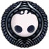
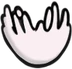
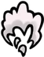
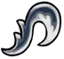
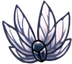
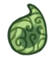
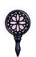

Magias
|  Foco |
Usa alma para recuperar vida. É liberado no começo do jogo. |
 Espírito Vingativo |
Usa alma para atirar um espírito na direção que o jogador está olhando. É liberado ao concluir o desafio do Xamã Caracol. |
|  Mergulho Desolador |
Usa alma para se arremesar contra o chão, causando uma explosão. É adquirido ao derrotar o Mestre das Almas. |
|  Espectros Uivantes |
Usa alma para soltar um grito, acertando toda a área em cima do jogador. É liberado em uma área secreta em um cânion. |
Alma Sombria |
Usa alma para atirar um espírito sombrio na direção que o jogador está olhando, com um dano alto. É liberado após matar um chefe escondido atrás de uma porta trancada. |
Escuridão Descente |
Usa alma para se arremesar contra o chão, causando uma explosão enorme, com dano extremo e deixando o jogador invencível por 1 segundo. É liberado após investigar o corpo de um xamã cristalizado. |
Grito do Abismo |
Usa alma para soltar um grito de alma e sombra, acertando toda a área em cima do jogador, com um dano 16x maior que do ferrão. Está escondido nas profundezas do abismo e só pode ser adquirido perto do final do jogo. |
Habilidades
 Manto de Asa de Mariposa |
Libera a habilidade de esquivar para frente. Obtido ao derrotar Hornet. |
|  Garra de Louva-a-Deus |
Permite que o jogador suba por paredes, se agarrando nelas. Liberado ao achá-la na vila dos louva-a-deus. |
|  Asas do Monarca |
Libera o pulo duplo, uma das habilidades mais versáteis e utéis. Obtida ao derrotar o Receptáculo Quebrado. |
 Coração de Cristal |
Libera a canalização de energia para lançar o portador para a frente com velocidade imensa. Obtido no núcleo de um golem antigo. |
|  Lágrima de Isma |
Permite que o seu portador possa nadar em ácido. Obtida no bueiro. |
 Manto Sombrio |
Aprimora a habilidade do manto, permitindo a esquiva por dentro de inimigos. É liberado ao nadar na substância negra do abismo. |
|  Ferrão dos Sonhos |
Permite que o jogador entre em sonhos e roube alma de inimigos, além de coletar essência. Liberado após conhecer uma Mariposa dentro de um sonho. |
Percepção do Mundo |
Permite ver a porcentagem de conclusão do jogo. Liberado na última sala do mapa. |